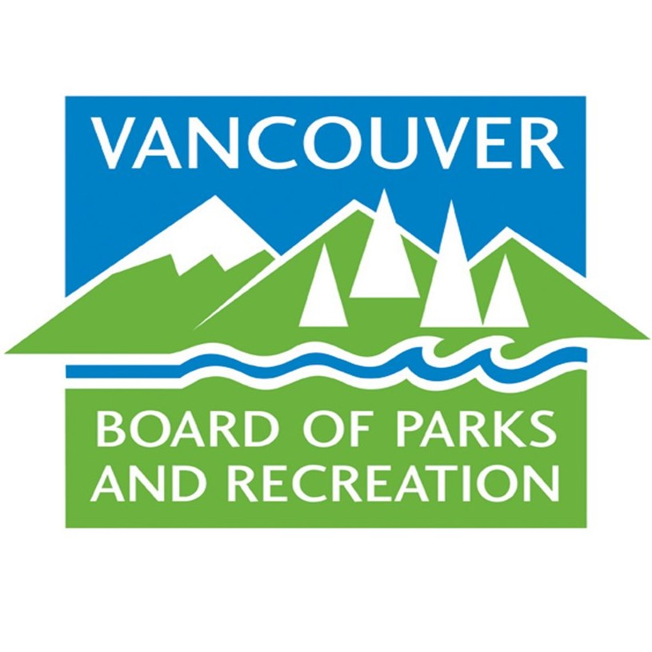
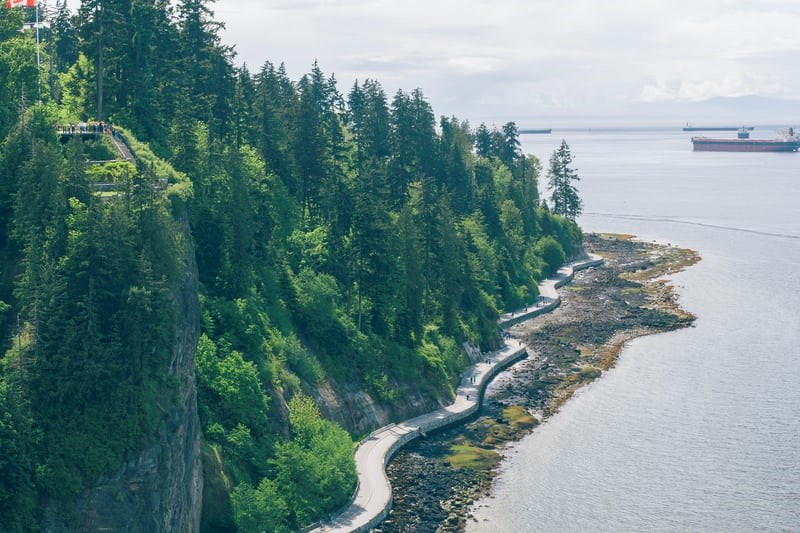
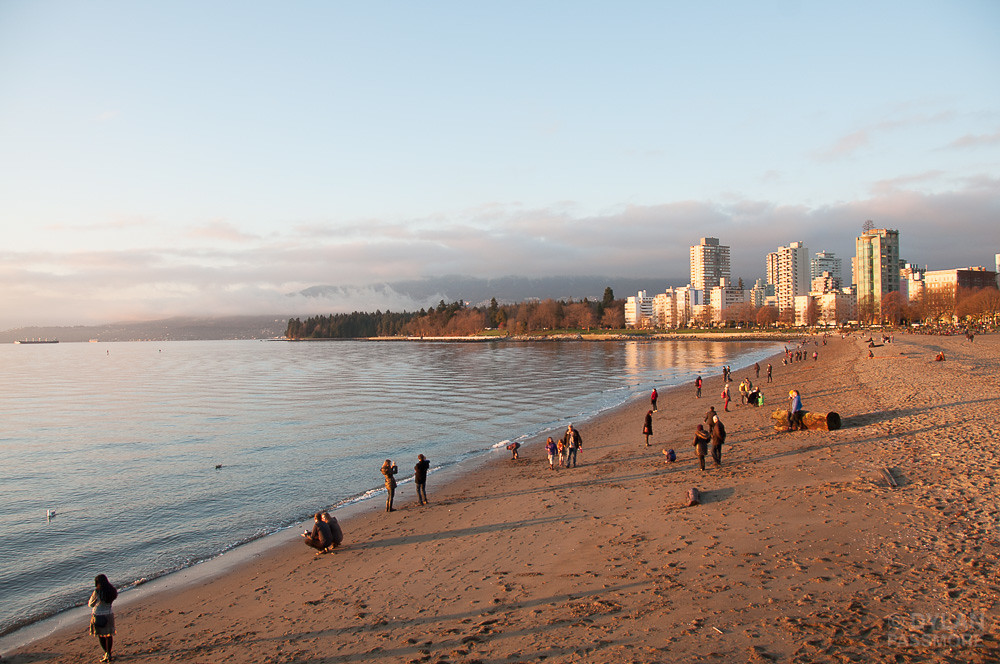

We are the only municipality in Canada with an elected park board, the Vancouver Board of Parks and Recreation.

Board of Parks and Recreation
The Park Board operates:
240 parks
Destination gardens
24 community centres with swimming pools, arenas, and playing fields
Three championship golf courses
Stanley Park, 404-hectares (1,000 acres), is considered one of the top urban parks in the world with ancient cedars, wildlife, rainforest ecology, vibrant art and attractions, and a seawall path used by millions of walkers and cyclists a year.
From small neighbourhood green spaces to large destination parks and feature gardens, the Vancouver Park Board maintains more than 230 parks that make up 11% of Vancouver's land mass.
Ten oceanside beaches and one freshwater lake beach provide residents and visitors ample access to the water, as does the 22 km Seawall that circles Stanley Park and False Creek.
The Seawall in Vancouver

Seawall
The Park Board operates:
Vancouver has the world's longest uninterrupted waterfront path. The 28 km Seaside Greenway is an uninterrupted pathway, including the Stanley Park Seawall, that extends from the Vancouver Convention Centre to Spanish Banks Park. Perfect for a walk, cycle, or jog, it is the most popular recreational spot in the city.
The Seawall is divided in to two clearly marked sections - one for walkers and joggers (closest to the water), and one for cyclists and inline skaters (inside path).
Be sure to follow the signs to make sure you use the seawall safely, especially on sunny summer days and weekends when the area is particularly busy.
Beaches

English Bay Beach
Vancouver's public beaches and waterfront access make it among the most liveable cities in the world.
The Park Board advocates for access to our most precious asset: the waterfront. Starting in the 1920s, park commissioners made it a priority to incrementally acquire beachfront property that was earlier snapped-up for hotel and private residential development.
By the mid-1980s we had acquired full waterfront access along English Bay from Burrard Bridge to Stanley Park and all the waterfront from Spanish Banks to Jericho Beach. Inroads had been made along Point Grey Road with a handful of street-end lookouts.